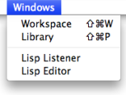
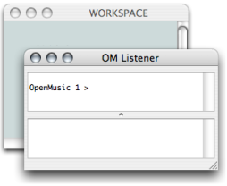
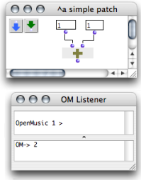
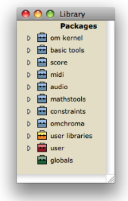

Windows of the OM Environment
 | The OM interface is declined through a set of windows and editors, which can be accessed through the
|
Workspace Window
The workspace is designed to host all files and folders related with the user's projects. To open or show the workspace window :
The Workspace and the Lisp Listener appear at the start of a session. |  |
The window of a new workspace always comes empty first. Material must be added there by the user.
Lisp Listener
 The OM+ box performs an addition, whose result is given in the Listener. | The Listener is a Lisp communication interface : results of computations, warnings or error messages are displayed there. It also allows to send commands to OM, in other words, to evaluate Lisp expressions. User inputs are typed and interpreted in the upper part of the Listener window. Output messages are printed in the lower part of the window. To open or show a listener window :
|
Library Window
The Library window gives access to a whole set of preexistent programming items that are ready to use, as well as imported or user-defined elements. Items are located and organized within the Library in various packages[1]. To open the Library window :
|  |
Other Windows
Programming items are represented in various window types. The Windows menu shows the name of
any
open window. Selecting a name brings the corresponding window to the foreground.
The Lisp Editor is a Lisp programming interface which allows to edit and evaluate programs.
To open the Lisp Editor, go to Windows / Lisp Editor.
- Package
Contains functions or classes components belonging to a common category of programming items. Packages are provided at the installation of OM, but the can also be loaded dynamically or added by the user.